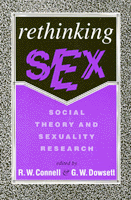

<body bgcolor="#FFFFFF" text="#000000" link="#0000FF" vlink="#CC0000" alink="#CC0000"><center><hr width="350" size="1" align="center" noshade>Essays examine the social dimensions of sexuality<hr width="350" size="1" align="center" noshade><p><a href="https://cdcshoppingcart.uchicago.edu/Cart/ChicagoBook.aspx?ISBN=9781566390729&&PRESS=temple" target="_top">Buy this book!</a> | <a href="https://cdcshoppingcart.uchicago.edu/Cart/Cart.aspx?PRESS=temple" target="_top">View Cart</a> | <a href="https://cdcshoppingcart.uchicago.edu/Cart/Cart.aspx?PRESS=temple" target="_top">Check Out</a></p><p></p></center><!--none//--><h1>Rethinking Sex</h1>
<H2>Social Theory and Sexuality Research</H2>
<h3>edited by R. W. Connell and G. W. Dowsett</h3>
<P>cloth 1-56639-072-9 $44.95, Apr 93, <FONT COLOR=#990033>Out of Print</FONT>
<br>paper 1-56639-073-7 $19.95, Mar 93, <FONT COLOR=#990033>Out of Stock Unavailable</FONT>
<br>Electronic Book 1-59213-068-2 $.00 <FONT COLOR=#990033>Out of Print</FONT>
<BR> 192 pp
5.5x8.25
</P><h3 align="center"><P><font color="#996633">Sex and Gender Section Award for Distinguished Contribution to the Study of Sex and Gender, American Sociological Association,
1995</font></P>
</H3>
<p>This volume of essays sharply questions current knowledge and ideas about sexuality, social theory, and public policy research on sexuality. The contributors, internationally recognized scholars and activists from Australia, examine the dominant research models from the United States and Western Europe and propose a new perspective, one sensitive to the social construction of sexuality and its research and to variation in sexual practices across cultures.
<p>Addressing the debates over sexual conduct from contraception to AIDS prevention, <I>Rethinking Sex</I> provides a systematic examination of the social dimensions of sexuality. Social theory, public policy analysis, and historical and survey research are applied to issues ranging from AIDS and gay identity to perceptions of women's sexuality and relations between the state and private sexual behavior.
<BR>&nbsp;<h2>Excerpt</h2><P>Excerpt available at <a href="http://www.temple.edu/tempress">www.temple.edu/tempress</a></p>
<BR>&nbsp;<h2>Contents</h2><P>
<p>Notes on Contributors
<br>Acknowledgments
<br>Introduction &#150 R.W. Connell and G.W. Dowsett
<br>1. Frameworks and Questions in Australian Sexuality Research &#150 Judith A. Allen
<br>2. AIDS and the Discourses of Sexuality &#150 Dennis Altman
<br>3. 'The Unclean Motion of the Generative Parts': Frameworks in Western Thought on Sexuality &#150 R.W. Connell and G.W. Dowsett
<br>4. Absolute Sex? Unpacking the Sexuality/Gender Relationship &#150 Rosemary Pringle
<br>5. Sexuality and the State in Time of Epidemic &#150 J.A. Ballard
<br>6. The 'Present Moment' in Sexual Politics &#150 Jill Julius Matthews
<br>7. Human Sexuality in Australia: The Quest for Information &#150 John S. Western
<br>References
<br>Index
</P><BR>&nbsp;<H2>About the Author(s)</H2>
<P><B>R. W. Connell</B> is presently a visiting professor at the University of California, Santa Cruz. The author or co-author of eleven other books, he was 1991-1992 Professor of Australian Studies at Harvard University. He has been Professor of Sociology at Macquarie University in Sydney, Australia, since 1976. He has also written <i><a href="1067_reg.html" TARGET="_top">Schools and Social Justice</a></i> (Temple).</P>
<P><b>G. W. Dowsett</b> is Research fellow in Sociology in the School of Behavioural Sciences at Macquarie University. He currently works as Assistant Head of the AIDS Research Unit at Macquarie University, part of the National Centre for HIV Social Research, and is a former Vice-President of the AIDS Council of New South Wales.</P>
<BR><H2>Subject Categories</H2>
<p><A HREF="/tempress/gender.html" TARGET="_top">Gender Studies</a>
<BR><A HREF="/tempress/sociology.html" TARGET="_top">Sociology</a>
</p>
<p align="center"><a href="https://cdcshoppingcart.uchicago.edu/Cart/ChicagoBook.aspx?ISBN=9781566390729&&PRESS=temple" target="_top">Buy this book!</a> | <a href="https://cdcshoppingcart.uchicago.edu/Cart/Cart.aspx?PRESS=temple" target="_top">View Cart</a> | <a href="https://cdcshoppingcart.uchicago.edu/Cart/Cart.aspx?PRESS=temple" target="_top">Check Out</a></p><p><font face="Arial" size="1"><a href="copyright.html" onMouseOver="window.status='Web Copyright Policy';return true;" onMouseOut="window.status=''" title="Web Copyright Policy">&copy;</a> 2015 <a href="http://www.temple.edu" target="new" onMouseOver="window.status='Link to Temple University home page';return true;" onMouseOut="window.status=''" title="Link to Temple University home page">Temple University</a>. All Rights Reserved. http://www.temple.edu/tempress/titles/1049_reg.html</font></p>